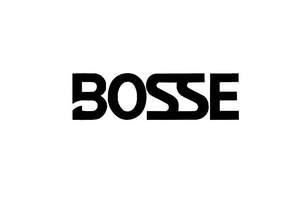

Trade Mark Journal No.2025/051 19 December 2025
UK00004309171 11 December 2025 (9,37)

- Class 9
- Computers; Mainframes [computers]; Computers and computer hardware; Desktop computers; Mouses for computers; Notebook computers; Monitors for computers; Interfaces for computers; Headsets for use with computers; Computer programs for connecting remotely to computers or computer networks; Components for computers; Computer mainframes; Personal computers; Speakers for computers; All-in-one computers; Peripherals adapted for use with computers; Peripheral equipment for computers; Computer servers; Electronic components for computers; Computer programs for searching remotely for content on computers and computer networks; Computer peripherals; Input devices for computers; Computer motherboards; Computer systems; Add-on-cards for computers; Computer programs for searching the contents of computers and computer networks by remote control; Peripherals adapted for use with computers and other smart devices; Computer keyboards; Computer networks; Wireless computer peripherals; Personal home computers; Computer databases; Work stations [computers]; Computer mouses; Computer trackballs; Computer hardware; Hardware (Computer -); Computer screens; Computer interfaces; Computer keypads; Communications servers [computer hardware]; Computer peripheral devices; Peripheral devices (Computer -); Monitors [computer hardware]; Computer memory devices; Computer monitors; Computer network server; File servers; Computer database servers; Network servers; Network access server hardware; Servers for web hosting; Internet servers; Cloud servers; Communications servers; Network access server operating software; Network facsimile servers; Video servers; Digital video servers; Digital audio servers; Computer network-attached storage [NAS] hardware; Computer network-attached storage (NAS) hardware; LAN [local operating network] hardware; Computer network hardware; NAS (Network attached Storage); Network-attached storage [NAS]; Network management computer software; Computer networking hardware; Computer network switches.
- Class 37
- Repair of computers; Installation of computers; Maintenance of computers; Installation, repair and maintenance of computers and computer peripherals.
Bosse Computers Ltd